Primero que nada como comenzamos en la tienda con mis amigos garantizamos que con nosotros sus bicicletas estaran bien y que arreglaremos sus problemas y cambiaremos lo necesrio para que sea de su agrado y que funcione de la mejor manera y se desempeñe de una forma formidable a la hora de las competiciones o a la hora de nada mas que sentarce en ella.
Arreglo de manecilllas y de frenos a Q5.00 Quetzales
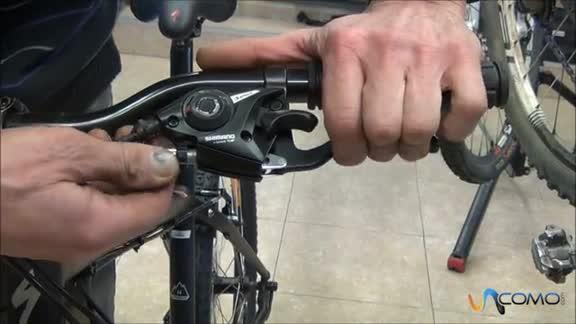
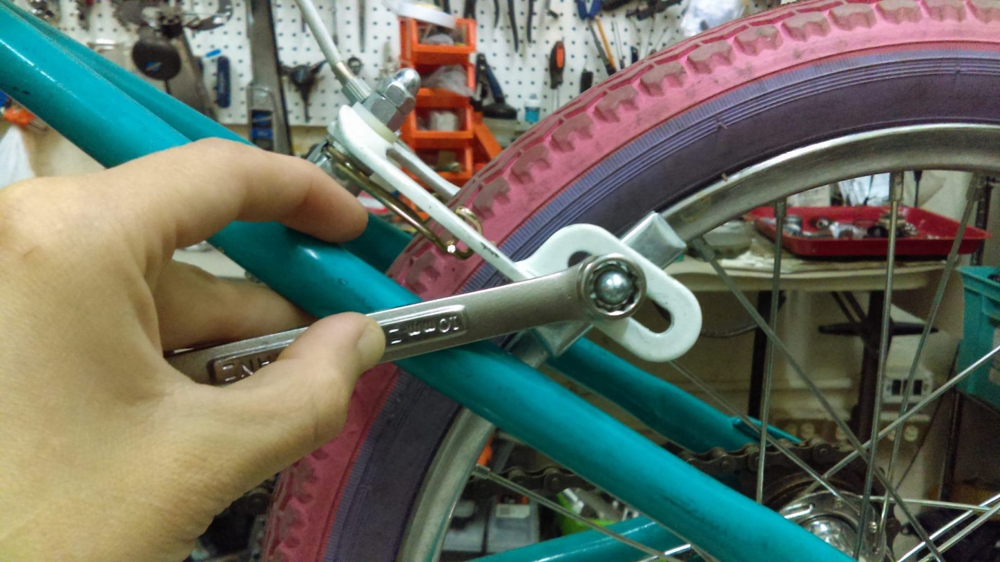
llantas a Q35.00 Quetzales
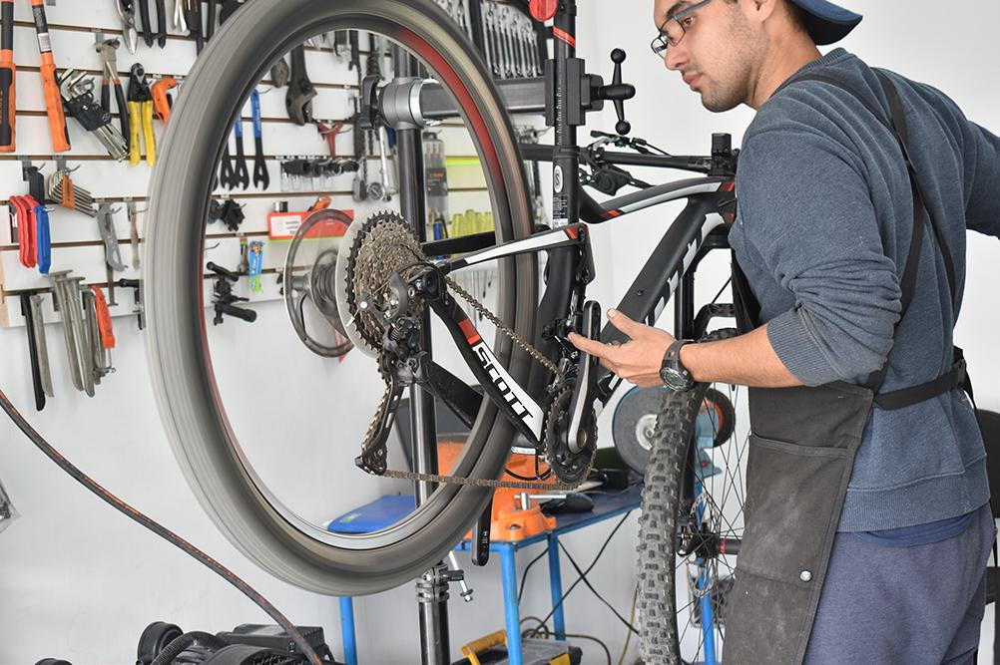
Apretada de rrallos a Q5.00 Quetzales
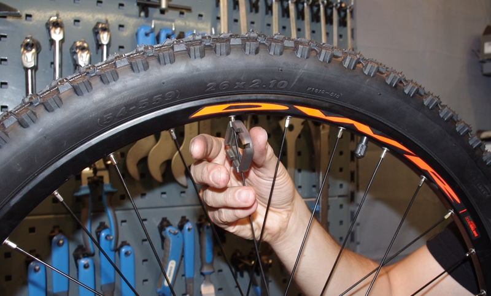
Pintada de cuadro a Q75.00 Quetzales
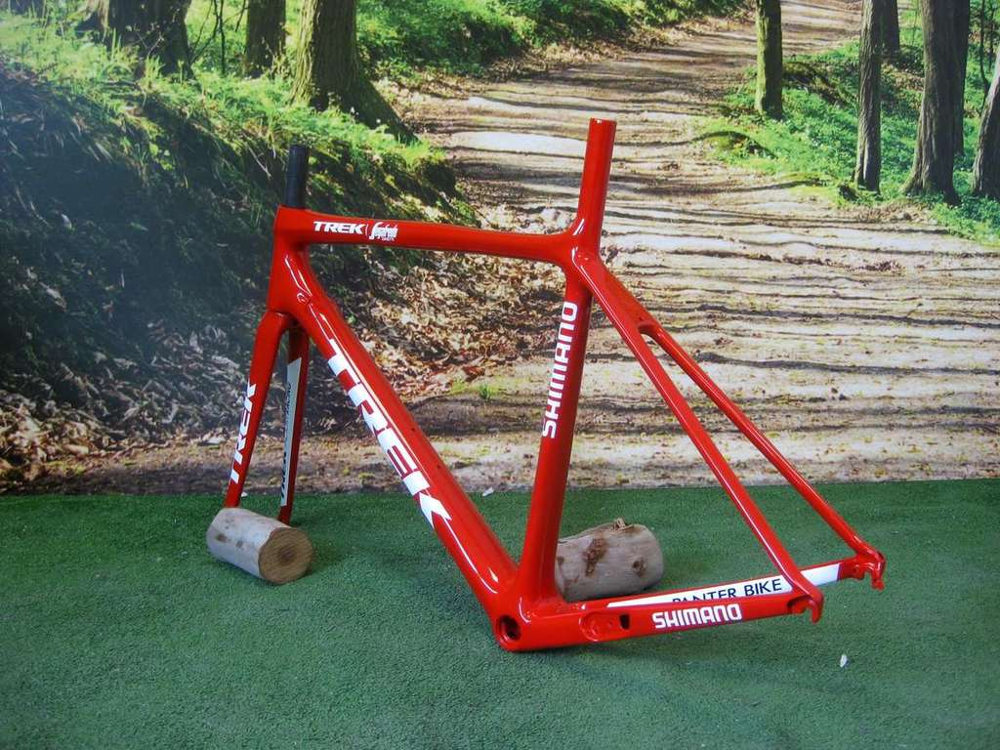
cadena a Q45.00 Quetzales
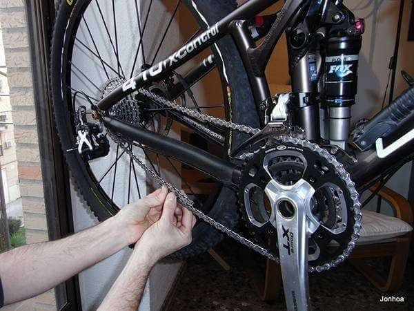
tubo a Q35.00 Quetzales
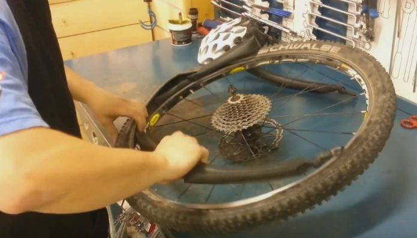
pedal dirt jump a Q50.00 Quetzales
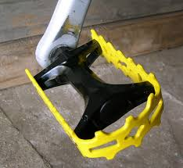
Pedal bmx a Q40.00 Quetzales
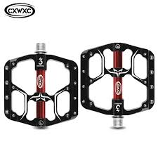
pedal ordinaria a Q40.00 Quetzales
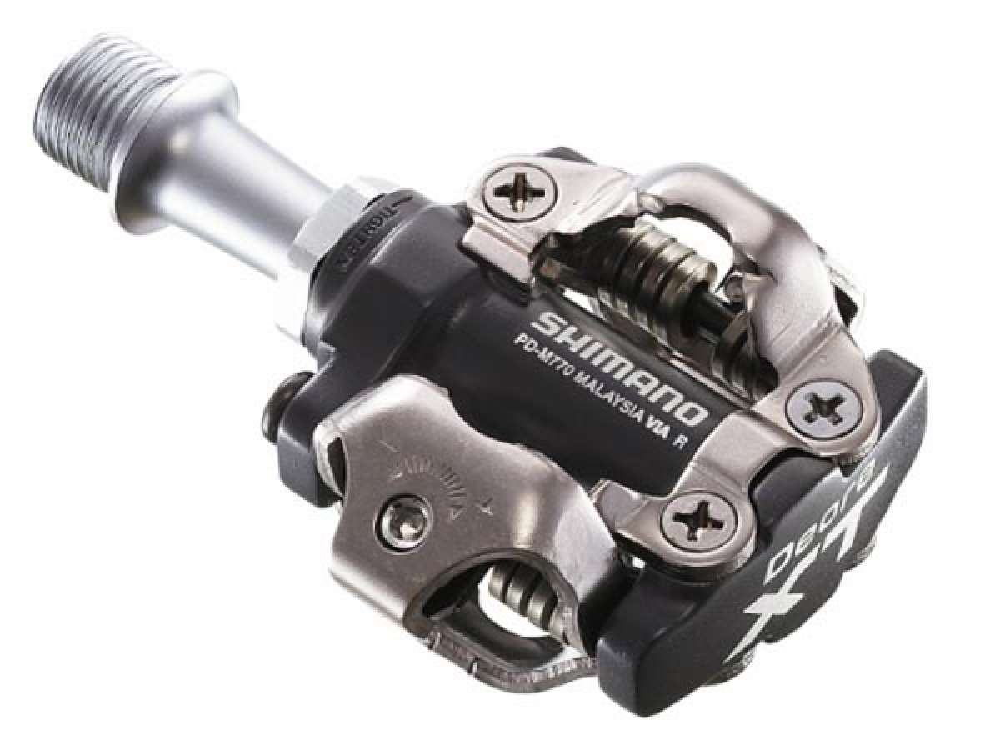
sillon dirt jump a Q65.00 Quetzales
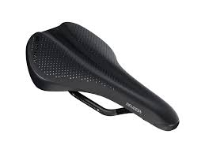
sillon de bmx a Q50.00 Quetzales
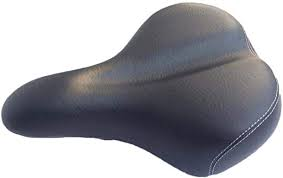
sillon ordinario a Q40.00 Quetzales
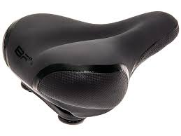
NUESTROS PRODUCTOS
Rally o Cross Country (XC) Q650.00 QUETZALES
Competiciones por terreno ascendente y descendente. Suelen disputarse en circuitos de 7-10 km de longitud a los que se efectúan varias vueltas o circuitos de mayor longitud con partida y llegada (sin vueltas). Todos los corredores parten al mismo tiempo. Aquí las pulsaciones medias suelen ser entre 170-180 ppm.
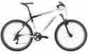
Descenso o Downhill (DH) Q800.00 QUETZALES
Recorrido cuesta abajo de dificultad tecnica media o alta en el que los corredores luchan contra el cronometro de manera individual, efectuandose el remonte por medios mecanicos telesillas o camiones
Big air Q700.00 QUETZALES
Consiste en saltar rampas muy altas llegando hasta los 10 metros y mas de altura en el salto y hacer trucos en el aire.
Salvo raras excepciones, se usan las mismas bikes que para dirt.
Cada una de estas especialidades han dado lugar a distintas tipologías de bicicleta. Asi, en rally se utilizan bicicletas habitualmente sin suspension trasera, con suspensión delantera de poco recorrido y muy ligeras en muchos casos por debajo de 10 kg. En el otro extremo, las bicicletas de descenso usan cuadros muy reforzados y pesados, sistemas de suspensión trasera y delantera de largo recorrido, ruedas gruesas y pesadas, etc., lo que da lugar a bicis que rondan los 20 kg.
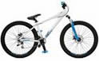
Dirt Jump Q1,500.00 QUETZALES
Circuito de saltos de tierra. Consiste en ir saltando y haciendo trucos o acrobacias en el aire.
Se pueden usar las mismas bicicletas que para 4x
Megavalanche o Downhill Maratón y Freeride (FR) Q1,300.00 QUETZALES
Descenso de larga duracion, generalmente más de 10 km. Se suelen emplear bicicletas de doble suspensión pero mas ligeras debido a la importancia que cobra el pedaleo. Además, las pruebas avalancha se diferencian de las de descenso porque todos los participantes salen al mismo tiempo, como una estampida. La suspension trasera es de menor recorrido que las de DH